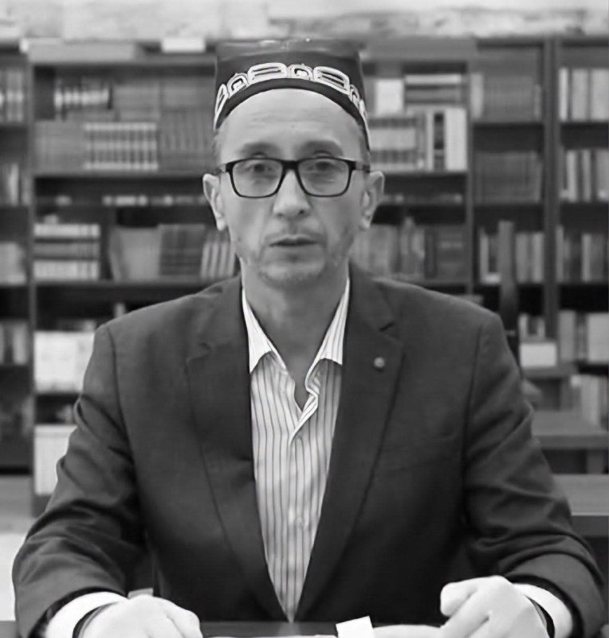

Inna lillahi va inna ilayhi rojiun.

Inna lillahi va inna ilayhi rojiun.
Imom Buxoriy nomidagi Xalqaro ilmiy tadqiqot markazida Yo'ldoshxon Isayev domla ishlar edilar.
O'ta kamtar, samimiy, kirishimli, kibrdan mutlaqo yiroq, xokisor va go'zal xulqli inson edilar.
U kishi bilan bir marta markazga borganda ko'rishganman.
Bir necha marta telefonda gaplashganman.
Turkiyadagi To'pqopi muzey-kutubxonasiga onlayn a'zo bo'lolmagan edim, ariza to'ldirganman-u, qabul qilishmayotgan edi. Borganimda Yo'ldoshxon akaga gapdan gap chiqib aytdim. Darhol qo'ng'iroq qildilar. O'sha yerda Sarro degan qiz ishlarkan, shu ondayoq u orqali meni kutubxonaga onlayn a'zolikka tasdiqlatdilar.
Juda hayron qoldim: nahotki, shunday oson va beg'araz yaxshilik qiladigan odamlar bormi deya.
Chunki vaqt o'tgani sayin bunday yaxshilik qiladiganlar haddan tashqari kamayib ketayotgani sababli hech kimdan biror yaxshilik kutmay qo'ygan edim. Hatto dunyoda biror odam xolis yaxshilik qilishga qodir bo'lmay qolyapti degan tushkun o'y g'olib bo'la boshlagan edi menda.
Balki shu tariqa insonlar bir-birlarining xolis yaxshilik qilishlariga ishonmay qo'yishsa kerak.
Domla bilan yaqinman, qadrdonman deb ayta olmayman.
U kishi hamma qatori menga shunchaki yaxshilik qilib ketdilar deb o'ylayman.
Eslaridan ham chiqib ketgandir.
Bugun eshitib qalbim mahzun bo'ldi: Domla Yo'ldoshxon Isayev boqiy dunyoga ketibdilar.
Allohim rahmatiga olsin.
Xulqda, kamtarlikda, xokisorlikda, hech narsaga da'vo qilmaslikda Yo'ldoshxon akaga o'xshashni orzu qilaman.
Robbim, bir go'zal xulqli, yerni ham ozorlamay deya ehtiyot bo'lib bosib o'tgan mo'min bandangni qabul et va go'zal muomala qil!
Gunohlarini kechir va rahmating bilan o'rab ol!
Omin, ya Robbal olamiyn!
Ildirma:
Domlaning qisqa daqiqalik nutqlari: